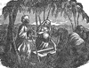
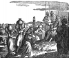

Collective Biographies of WomenAn Annotated Bibliography
Alison Booth
171.
Child, Lydia Maria Francis. The History of the Condition of Women, in Various Ages and Nations. Ladies' Family Library vols. 4-5. Boston: Allen; London: Simpkin, Marshall, 1835. Boston: Otis, Broaders, 1838; 1840; 1843. New York and Boston: Francis 1835; 1845; 1849.
Search OCLC WorldCat for this title.
Search Google Books for this title.
Child, Lydia Maria Francis. The History of the Condition of Women, in Various Ages and Nations. Ladies' Family Library vols. 4-5. Boston: Allen; London: Simpkin, Marshall, 1835. Boston: Otis, Broaders, 1838; 1840; 1843. New York and Boston: Francis 1835; 1845; 1849.
Chapter titles: I. Comprising the Women of Asia and Africa ; II. Comprising the Women of Europe, America, and South Sea Islands.
NOT:=history, typology
-
Rebekah bringing water
-
 A Mohammaden woman riding
A Mohammaden woman riding -
Girl of Timor
-
 Asiatic women baking bread
Asiatic women baking bread -
Egyptian women
Search OCLC WorldCat for this title.
Search Google Books for this title.